| 항목 | 이전 결과 도착 직전 프레임 |
이번 결과 앞 66% 프레임 |
해석 |
|---|---|---|---|
| center Flip 비율 | 100% (6/6) | 13.3% (2/15) | basket이 클 때만 마스킹 효과 큼 |
| left Flip 비율 | — (stable) | 0% (0/15) | basket이 작을 때 복도 패턴이 지배 |
| right Flip 비율 | — (stable) | 0% (0/15) | 동일 |
| avg basket area | ~0.72 (화면의 72%) | 0.006–0.18 | 이전 테스트는 거의 도착 순간 이미지 |
| avg conf drop | 매우 큼 (예측 반전) | +0.015 (좌: +0.008, 중: +0.036, 우: +0.001) | 실제 내비 중엔 basket 외 신호 사용 중 |
| 전체 flip | 6/6 (100%) | 2/45 (4.4%) | 도착 직전 = 특수 상황, 일반화 어려움 |
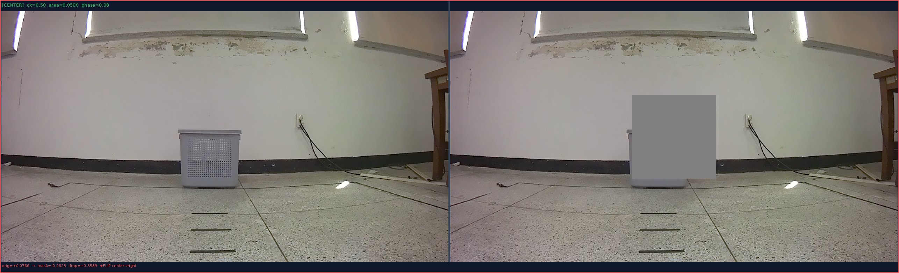
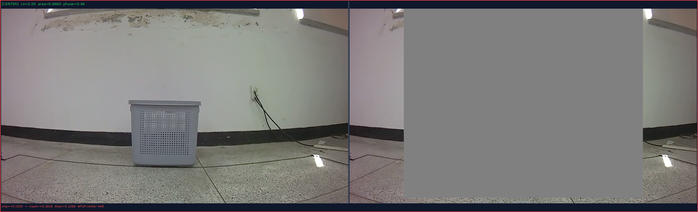
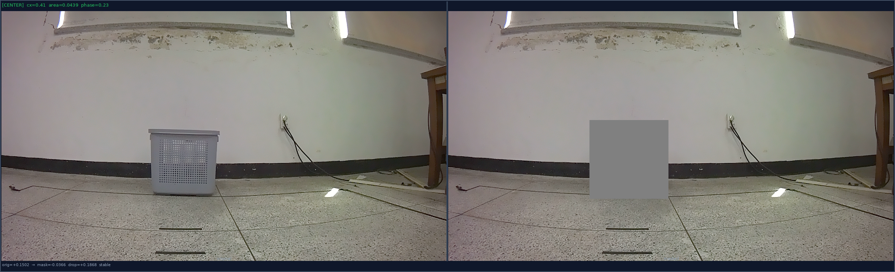
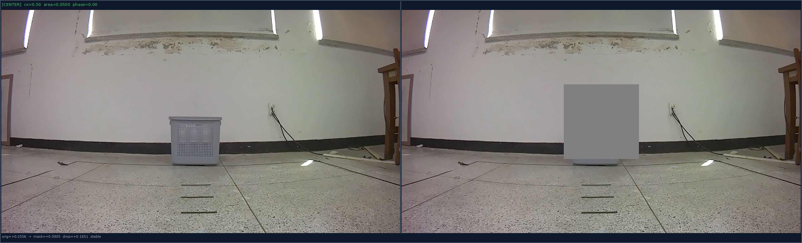
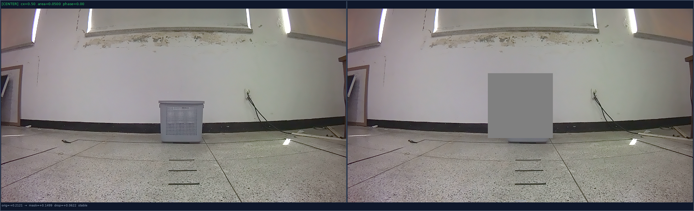
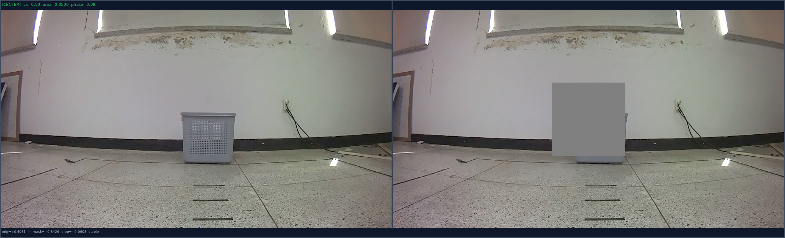
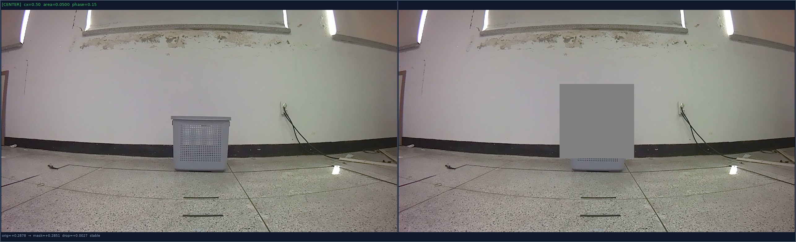
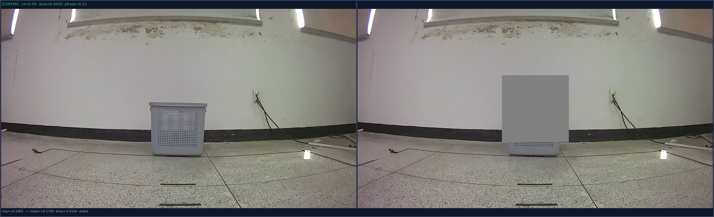
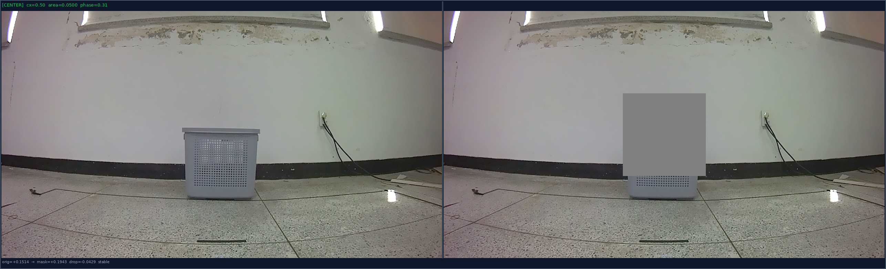
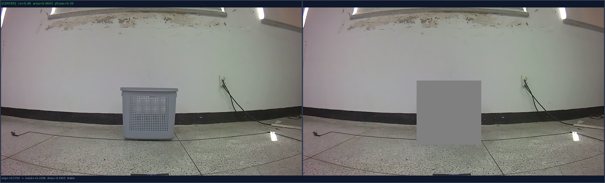
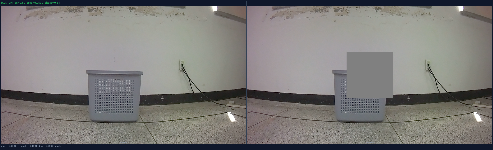
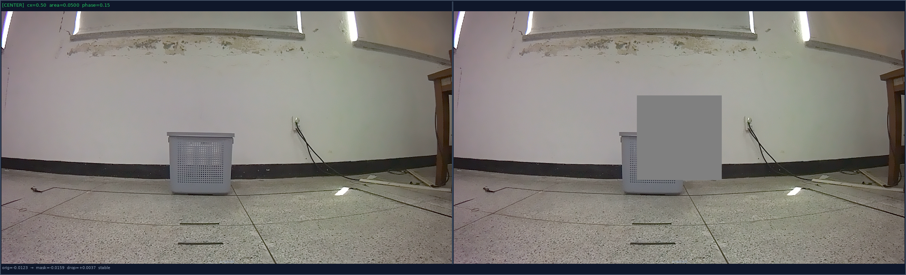
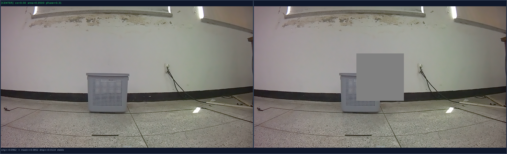
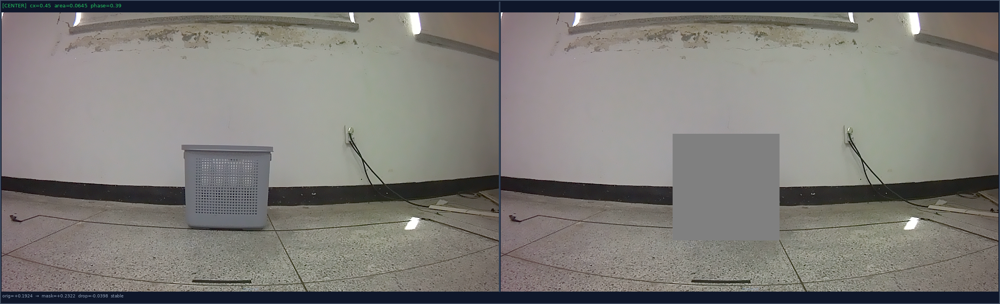
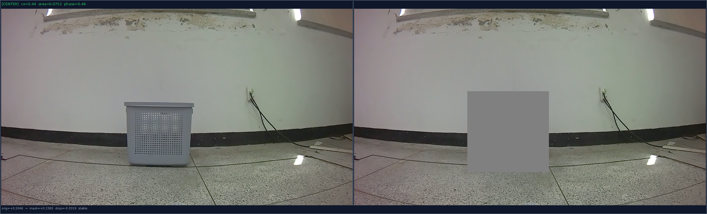